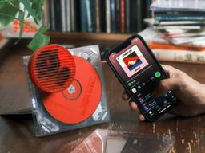

デイリーガジェット
https://daily-gadget.net/
デイリーガジェットは、スマホや海外発のユニークなガジェット、クラウドファンディングの注目アイテムまで幅広くレビュー。生活をもっと楽しく快適にする視点で、日常に驚きと便利さを届けるガジェット情報メディアです。
フィード

AYANEO「KONKR Pocket Advance」に半透明のアイスブルー登場！109ドルから
デイリーガジェット
AYANEOは、サブブランド「KONKR」のAndroid携帯ゲーム機「KONKR Pocket Advance」に、半透明の新色「Ice Blue」を追加しました。価格は3GB＋32GBモデルが109ドル（約1万7,4...投稿 AYANEO「KONKR Pocket Advance」に半透明のアイスブルー登場！109ドルから は デイリーガジェット に最初に表示されました。関連記事:「KONKR Pocket Advance」に新色アイスピンク登場！中身が透けるゲームボーイアドバンス風ゲーム機AYANEO「KONKR Pocket Advance」に限定色「Onyx Ice」追加！500台限定のゲームボーイアドバンス風クリアブラックAYANEO「KONKR Pocket Advance」発表！ゲームボーイアドバンス風のAndroid携帯ゲーム機が89ドルから予約開始
1時間前

【Amazon】「Xiaomi Pad Mini」がセールで約6.7万円！片手で持てる8.8型
デイリーガジェット
出典：About Amazon Japan Amazonで、11月27日(金)から「ブラックフライデー」が開催されています！ 「Xiaomi Pad Mini」が、こちらのページで、約67,500円で購入が可能です。 片...投稿 【Amazon】「Xiaomi Pad Mini」がセールで約6.7万円！片手で持てる8.8型 は デイリーガジェット に最初に表示されました。関連記事:【Amazonブラックフライデー先行セール】スマホが最大31%OFF！Galaxy S26 UltraやPOCO X8 Proなど6機種【Amazonブラックフライデー】ヘッドホン・イヤホンが最大55%OFF！Beats Studio Proなど6機種まとめ「Xiaomi Pad 7」を実機レビュー！Snapdragon 7+ Gen 3搭載で高精細ディスプレイを持つ高コスパなタブレット！
3時間前

【Amazon】「JBL LIVE BEAM 3」がセールで約1万円！画面付きケースで操作できる
デイリーガジェット
出典：About Amazon Japan Amazonで、11月27日(金)から「ブラックフライデー」が開催されています！ 「JBL LIVE BEAM 3」が、こちらのページで、約10,000円で購入が可能です。 ケ...投稿 【Amazon】「JBL LIVE BEAM 3」がセールで約1万円！画面付きケースで操作できる は デイリーガジェット に最初に表示されました。関連記事:【Amazonブラックフライデー先行セール】スマホが最大31%OFF！Galaxy S26 UltraやPOCO X8 Proなど6機種【Amazonブラックフライデー】ヘッドホン・イヤホンが最大55%OFF！Beats Studio Proなど6機種まとめAmazon「ブラックフライデー2026」は11月27日0時から先行セール開始！開催期間とポイントアップなどお得なキャンペーンまとめ
4時間前

「Long Time No See Too」発売！スマホ用スピーカーにもなる約127ドルの透明CDプレーヤー
デイリーガジェット
香港のオーディオブランドであるNINM Labは、透明なジュエルケース型CDプレーヤーの最新モデル「Long Time No See Too」を発売しました。価格は988香港ドル（約127ドル）で、同社のオンラインストア...投稿 「Long Time No See Too」発売！スマホ用スピーカーにもなる約127ドルの透明CDプレーヤー は デイリーガジェット に最初に表示されました。関連記事:4ポート65wで衝撃の小ささ！GaN充電器「LilNob Share」 レビュー【MacBook Proも充電できる】急速充電器の決定打！小型・4ポート・100WのGaN充電器登場【発売記念クーポン配布中】2020年のUMPC（超小型ノートパソコン）全まとめ【随時更新】
6時間前
「iPhone 20 Pro」は3Dプリント製チタン採用か！4辺カーブ画面やセラミック限定版の噂
デイリーガジェット
Appleが2027年に投入する見込みのiPhone 20周年記念モデル「iPhone 20 Pro」および「iPhone 20 Pro Max」について、筐体素材とデザインに関する新たなリーク情報が浮上しました。アルミ...投稿 「iPhone 20 Pro」は3Dプリント製チタン採用か！4辺カーブ画面やセラミック限定版の噂 は デイリーガジェット に最初に表示されました。関連記事:iPhone18 Proは約15分で半分まで充電可能に！純正40Wアダプタ所有者は買い足し不要iPhone 18 Proが可変絞りカメラを初搭載！ボケも光条も操れる新機構、新色ダークチェリーで9月発表へ心拍計・歩数計を備えたレトロ風ウォッチ「Mega Man: My Play Watch」が登場！ロックマン2が腕で遊べる完全オフライン仕様で79.99ドル
7時間前
「Alldocube iPlay 80H」が日本発売！Android 17とLTE対応でセール時17,999円
デイリーガジェット
Alldocubeは、11インチディスプレイを搭載したエントリー向けAndroidタブレット「Alldocube iPlay 80H」を日本国内で発売しました。最新のAndroid 17を採用し、8,800mAhの大容量...投稿 「Alldocube iPlay 80H」が日本発売！Android 17とLTE対応でセール時17,999円 は デイリーガジェット に最初に表示されました。関連記事:「ALLDOCUBE iPlay 80E」がスマイルSaleで約2万円！11型2.5K液晶 × 4G LTE対応！ALLDOCUBE iPlay 70E を実機レビュー！110Hz＆SIM対応で普段使いに最適な11インチタブレットが1万円台と満足度高い！ALLDOCUBEの人気タブレットがAmazonスマイルセールで格安価格に！「iPlay 60 mini」が8,000円台など。
8時間前

「Innioasis Y2」が65.99ドルで発売！クリックホイールと外部SD対応のiPod Classic風プレーヤー
デイリーガジェット
Appleの「iPod Classic」を彷彿とさせるデザインを採用したポータブル音楽プレーヤー「Innioasis Y2」が海外で発売されました。前モデル「Innioasis Y1」から約1年ぶりとなる後継機で、8GB...投稿 「Innioasis Y2」が65.99ドルで発売！クリックホイールと外部SD対応のiPod Classic風プレーヤー は デイリーガジェット に最初に表示されました。関連記事:iPod Classicそっくりの音楽プレーヤー「Sudo」発表！タッチ式ホイールと2.73インチのタッチ画面を備え、249ドルで2027年出荷へ物理クリックホイールとUSB-C搭載、iPod風DAP「Innioasis Y1」が約8000円で登場。Bluetooth接続も対応Banggoodで格安タブレットや2-in-1PC大量激安クーポン発行中！【デイリーガジェット限定大量クーポン祭り】
21時間前

第7世代Corei5搭載のPanasonic製中古ノートPCが税込8,800円！Fujitsu の「Lifebook / U939/CX」が税込17,800円ほかアキバパレットタウン週末セール品全まとめ
デイリーガジェット
中古PC・サーバ販売のアキバパレットタウン 📷 BLACK FRIDAY SALE 開催中！ 📷 11/20(金)〜11/30(月) アキバパレットタウン アキバパレットタウンでは、現在ブラックフライデーセールが開催され...投稿 第7世代Corei5搭載のPanasonic製中古ノートPCが税込8,800円！Fujitsu の「Lifebook / U939/CX」が税込17,800円ほかアキバパレットタウン週末セール品全まとめ は デイリーガジェット に最初に表示されました。関連記事: 第11世代Corei3搭載のFujistu製中古ノートPCが税込17,800円！Lenovo製が64,800円ほかアキバパレットタウン週末セール品全まとめ第11世代Corei3搭載の富士通製中古ノートPCが17,800円！Panasonic製が19,800円ほかアキバパレットタウン週末セール品全まとめ第8世代Corei5搭載のLeonovo製中古PCが税込16,800円！ほかアキバパレットタウン週末セール品全まとめ
1日前

「折りたたみiPad」は2028年以降に延期か。最大20インチの大画面で価格は最大5,000ドル
デイリーガジェット
Appleが大型の折りたたみディスプレイを搭載した新型iPadの開発を継続していると報じられました。コードネーム「Project J312」と呼ばれるこの端末は、19〜20インチという大画面を備えるものの、価格は最大5,...投稿 「折りたたみiPad」は2028年以降に延期か。最大20インチの大画面で価格は最大5,000ドル は デイリーガジェット に最初に表示されました。関連記事:Huawei「MateBook Fold S」が14日発表！背面液晶と14.7型折りたたみ画面を備えた小型PCRetroid「Pocket Duo Lite」に強化版「Plus」が海外登場！搭載チップを一新しメモリ8GBと高速ストレージRetroid「Pocket Duo」が予約開始！120Hz有機EL2枚搭載の2画面Android機が10月中旬出荷へ
1日前

【Amazonブラックフライデー先行セール】スマホが最大31%OFF！Galaxy S26 UltraやPOCO X8 Proなど6機種
デイリーガジェット
出典：About Amazon Japan 年末恒例となったAmazonのビッグセール「Amazon ブラックフライデー」。 11月27日（金）0時から先行セールが始まり、Galaxy S26 UltraやPOCO X8...投稿 【Amazonブラックフライデー先行セール】スマホが最大31%OFF！Galaxy S26 UltraやPOCO X8 Proなど6機種 は デイリーガジェット に最初に表示されました。関連記事:【Amazonブラックフライデー】ヘッドホン・イヤホンが最大55%OFF！Beats Studio Proなど6機種まとめAmazonブラックフライデー先行セールでタブレットが最大26%OFF！Galaxy Tab S11 Ultraなどおすすめ5機種【実機レビュー】背面ディスプレイ搭載の新型「Xiaomi 18 Pro シリーズ」をハンズオン！気になる新機能や設定手順も徹底解説
1日前